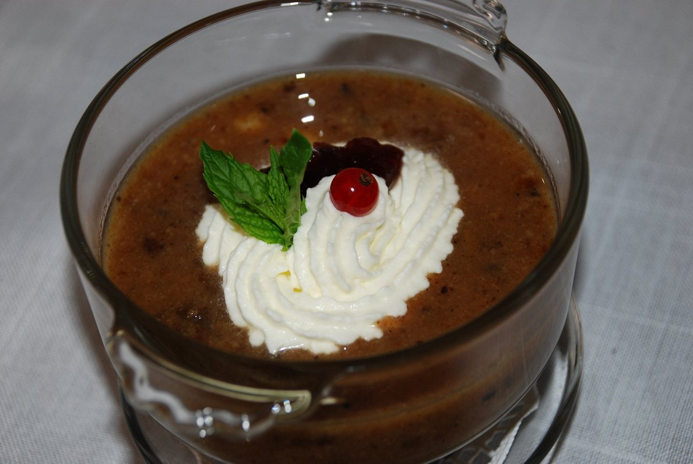

Home

Latvian Rye Bread Soup
Latvian Rye Bread Soup is a unique dessert that transforms humble rye bread into a luscious treat. Sweetened
with sugar and enriched with dried fruits like raisins and prunes, it has a delightful balance of tartness and
sweetness. Spiced with cinnamon, this dish is both aromatic and comforting.
Traditionally served chilled, it’s a popular dessert during summer or festive occasions. Its creamy texture and
earthy flavors from rye bread make it distinctively Latvian. Often topped with whipped cream, it’s a nostalgic
favorite for many locals, evoking memories of family gatherings.
Ingredients
- 500 g Latvian rye bread or dark rye bread
- 1 liter water
- 200 g sugar
- 100 g dried fruits (raisins, prunes, or apricots)
- 1 cinnamon stick
- Whipped cream (optional)
Instructions
- Prepare Bread: Crumble the rye bread into small pieces.
- Cook Bread: In a pot, bring water to a boil. Add the crumbled bread and simmer until it
becomes soft and mushy.
- Add Sweeteners: Stir in the sugar, dried fruits, and cinnamon stick. Simmer for another
10-15 minutes.
- Blend: Remove the cinnamon stick and blend the mixture into a smooth soup using a hand
blender.
- Chill and Serve: Let the soup cool, then refrigerate. Serve chilled, garnished with whipped
cream if desired.